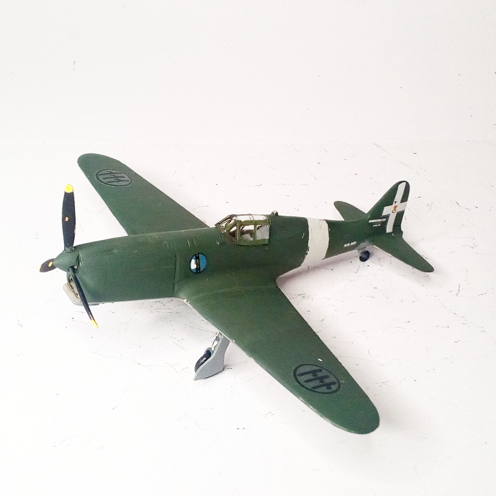
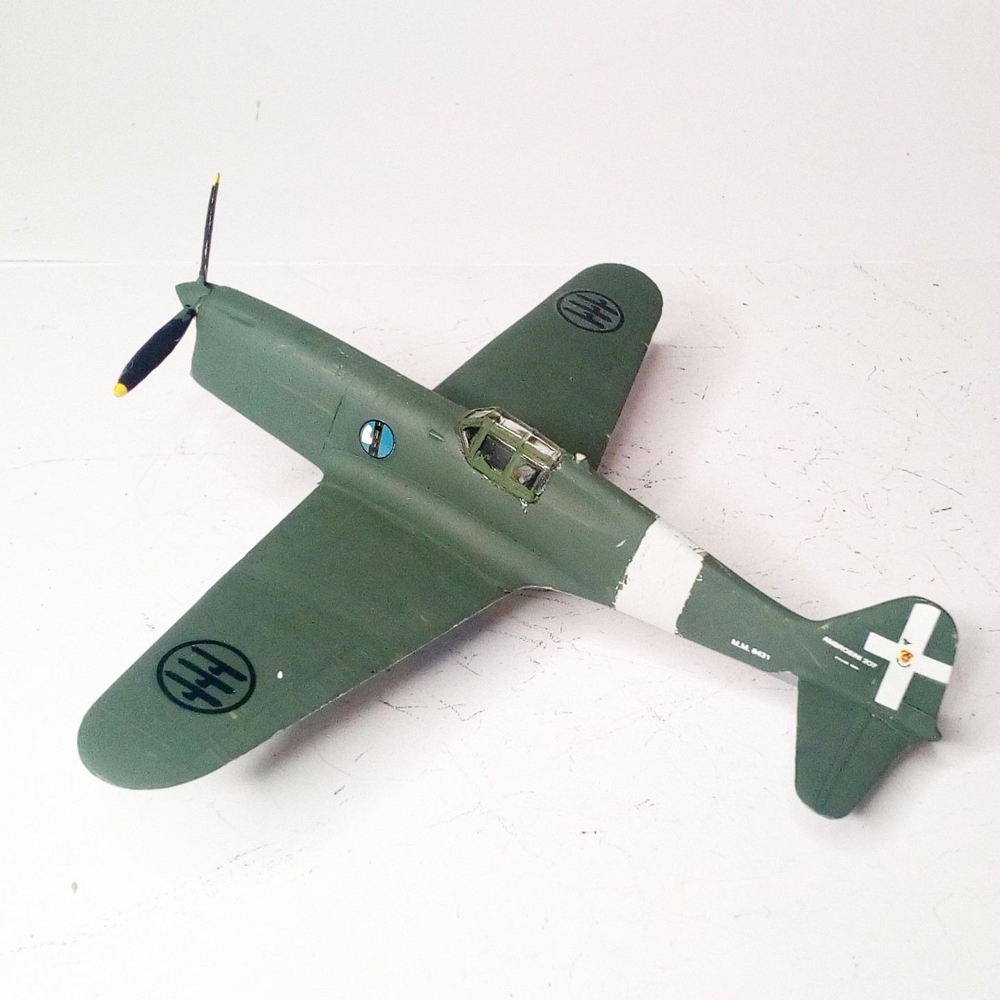

Aerei · scale model archive
S.A.I Dardo
S.A.I Dardo — Kit: RS Models, Scale: 1/72. Experimental lightweight fighter 1943 #1/72 #RSModels #Dardo

Photo gallery

English description
Experimental lightweight fighter 1943
#1/72 #RSModels #Dardo
Descrizione italiana
Caccia leggero sperimentale del 1943.